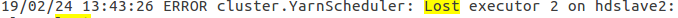
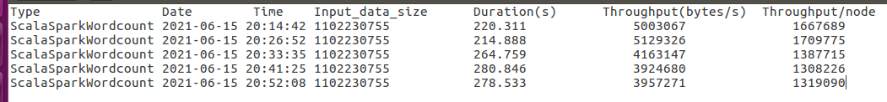

Syrian team in Raisoni
Syrian team in Raisoni
The Practical Part
2. The node hdslave1 the first data node (192.168.65.156).
3. The node hdslave2 is the second data node (192.168.65.155).
4. The node hdslave3 is the third data node (192.168.65.161).
1. Processor: Intel® Core™ i7 7500U Processor, 2.7 GHz (4 M Cache, up to 3.5 GHz).
2. Operating System: Windows 10 Pro.
3. Memory: 16GB DDR4, 2133MHz.
4. Graphic: AMD + RadeonTM R5 M420, with 2GB, VRAM.
5. Storage: SATA HDD 1TB 5400RPM + SSD Hard Drive 240 GB Internal.
1. Install Hadoop.
2. Install HiBench and connect it with Hadoop.
3. Choose a set of programs to test for failure as they are executed.
4. Determine the criteria used to evaluate performance.
5. Implementation and evaluation of Hadoop's performance when implementing selected programs.
6. Choosing a set of possible failures on both platforms.
7. Implementation and evaluation of Hadoop's performance when implementing programs with injection of failures into the components of the environment.
8. Install Spark and connect it with HiBench.
9. Implementation and evaluation of the performance of Spark at the selected programs.
10. Implementation and evaluation of the performance of Spark when implementing programs with the injection of failures into the components of the environment.
11. Results and recommendations.
1- Install Java on all nodes with the following instruction:
2- Install ssh on all nodes with the following instruction:
3- Edit the hosts file on all nodes with the $sudo gedit /etc/hosts command and insert the following lines:
4- Edit hostname file in all nodes and put new node name sudo gedit /etc/hostname $
5- Generate an ssh key on the master node: ssh-keygen.
6- Copy the content of the .ssh/id_rsa.pub file in the master node to ssh/authorized_keys in the master node:
$ cat $HOME/.ssh/id_rsa.pub >> $HOME/.ssh/authorized_keys
7- As well as to all other nodes through the following instructions:
$ sudo ssh-copy-id -i /home/manal/.ssh/id_rsa.pub manal@hdslave1
$ sudo ssh-copy-id -i /home/manal/.ssh/id_rsa.pub manal@hdslave2
$ sudo ssh-copy-id -i /home/manal/.ssh/id_rsa.pub manal@hdslave3
8- Download the Hadoop platform from the official website link in all nodes in the cluster:
9- Modify the .bashrc file and add an environment variable containing the java path and also add the Hadoop path as an environment variable in all nodes $ sudo gedit .bashrc
10- Add java path to hadoop-env.sh file in all nodes:
11- Modify the core-site.xml file to be as follows in all nodes:
12- Modify the hdfs-site.xml file to look like this in the master node:
13- Modify the hdfs-site.xml file to look like this in the master node:
14- Modify the yarn-site.xml file to look like this in the master node and the other nodes:
15- Modify the mapred-site.xml file in the master node and the other nodes to look like this:
16- Modify the file master and put the name of the master node inside it, and modify the file salves and put the name of the other nodes inside it.
17- We create the following path in the distributed Hadoop filesystem on the master node : $ sudo mkdir -p /usr/hadoop/hadoop_data/hdfs/namenode
18- Also on each data node create the following path /usr/hadoop/hadoop_data/hdfs/datanode
19- Run a hadoop cluster where we initialize the master node on first startup and then perform : $ /usr/hadoop/bin/hadoop namenode –format $ /usr/hadoop/sbin/start-a ll.sh
In the experiments, we will use the open source HiBench reference set, which is used to evaluate the performance of Hadoop and Spark big data frameworks and consists of workloads of various big data systems and a data generator that generates data of different sizes for those workloads. The workloads are comparatively abstract and can be easily configured to generate and run HiBench standards and is compatible with all major distributions of Hadoop and Spark frameworks such as: Apache, Cloudera and Hortonworks. HiBench uses the Hadoop Ecosystem which includes stacks and frameworks for software such as MapReduce, Storm, Flink, Nutch and Hive as well as shapes most Spark workloads. The metrics used in HiBench are: execution time per workload, throughput, and the amount of system resource usage. At the end of the workload run, all these metrics are appended to an output file for analysis. HiBench also provides a web-based output that shows system resource usage for each workload executed. The current version of HiBench is 7.0 that contains 19 workloads categorized into six main areas: Micro, Machine Learning, SQL, Graph, Web Search, and Streaming. HiBench for Micro Benchmarks uses a configurable data generator which mostly uses Hadoop's RandomTextWriter to write Binary Text directly to HDFS, For Web Search and Bayesian Classification HiBench uses the Wikipedia page-to-page link database and Wikipedia dump file respectively, For KMeans they developed a random data generator using the statistical distribution to generate the data. HiBench mostly creates unstructured data sets targeting the Hadoop file system.
1- Download HiBench from the following link and unzip it in your desired path on the master node:2- HiBench build: $mvn -Dspark=2.1 -Dscala=2.11 clean package
To build the Hadoop and Spark standards together: $ mvn -Phadoopbench -Psparkbench -Dspark=2.1 -Dscala=2.11 clean package
3- Determine the Scala version: To specify the version of Scala use -Dscala=xxx By default it is version (2.10) or (2.11) : $ mvn -Dscala=2.10 clean package
4- Connecting Hadoop with Hibench :
Requirements: Python >=2.6, bc (for report generation), HDFS and Yarn start in the cluster.
Create and modify the conf/hadoop.conf file and correctly add the following property values inside the file :
Prepare the file conf/ hibench.conf and insert the following lines:
The size of the input files can also be controlled by giving one of the values (tiny, small, large, huge, gigantic, big data) to the hibench.scale.profile property. It is also possible to control the number of abbreviated interviews in Hadoop to control the degree of branching as shown in the figure:
1. WordCount :
It is considered to be the classic example supported by both Hadoop and Spark platforms that use MapReduce to do the job, this program counts the number of times each word appears in the input file generated by RandomTextWriter and this program depends on the intensive CPU that counts the number of words in the input file. [67]. This program is implemented in Hadoop as follows: The corresponding function takes as its input one line from the input file and divides it into words and issues a pair of (key/value) for the word in the form of (word, 1), then the reduction function collects the number of times that each word appears and issues for each word a pair of (key/ value) as (word, sum) and the shorthand function puts the final result on [1] HDFS. In Spark, an RDD is first created by loading data from HDFS using the textFile() method. Each line of the RDD consists of one line from the raw file, then it applies the flatMap() , map() and reduceByKey() transformations in order which are registered Its metadata is not executed until the saveAsText() procedure is called. flatMap:
It takes an RDD made up of lines and converts it to an RDD made up of words. Map:
RDD converts words into RDD (word, 1) pairs, also called RDD (key/value). reduceByKey:
For each key (word) all values corresponding to it are reduced by adding all the values together, now we have an RDD of pairs (word, {number of occurrences}).1. Execution time :
It is the time between the beginning of the execution of the work (program) and its end, measured in seconds.2. Productivity :
It is a measure of the amount of data that the system can process during one time, and it is also the rate of input data during the execution time and is expressed in (bytes/second).3. Recovery time from failure :
It is the increase in the program execution time when a failure occurs, when choosing the superior platform in terms of fault tolerance will be based on the resulting increase in the execution time and not the total execution time after completing the work during a failure.2. The program was selected according to the load it affects the system (WordCount is a processor consuming).
3. The cluster manager for Spark Yarn has been selected.
4. Each program will be executed five times and the average values of the parameters are taken to obtain the most accurate results.
5. The failure injection moment will be determined on the basis of a percentage of the average program execution time without failure (for example): if the execution time of a program is ten minutes in Hadoop and eight minutes in Spark and the failure injection moment is chosen after 25% of the time required to complete this program execution It means failure will be injected after 2.5 minutes into Hadoop and 2 minutes into Spark.
6. When choosing a platform that is superior in terms of fault tolerance, it will be based on the resulting increase in execution time and not the total execution time after the work is completed during a failure.
This is done in two stages :
1- Run the prepare.sh file that launches the hadoop task responsible for generating income data on HDFS :2- bin/workloads/micro/wordcount/prepare/prepare.sh
The files generated from the previous instruction can be seen by placing the following link in the browser.
http://master:50070/explorer.html#/HiBench/Wordcount/Input
or through the following command: /usr/hadoop/bin/hadoop dfs -ls /HiBench/Wordcount/Input
Where the meaning of the input file sizes specified in the previous file is controlled as numbers included in the setup file for each workload separately. For example, for the wordcount program, the wordcount.conf setup file is modified in the following path: /HiBench-master/conf/workloads/micro/ wordcount .conf
The folder in which the program's input files and its output files will be placed is also specified:
Through the link master:8088/cluster, the webUI interface is displayed containing details of all the programs that are launched and implemented within the cluster:
Run run.sh to send the Hadoop program to the cluster and launch its execution and bin/run_all.sh can also be used to run all workloads listed in conf/benchmarks.lst and conf/frameworks.lst.
In order to write down the correct results, we re-implement WordCount and all of the following programs in both Hadoop and Spark five times and then take the average of the measures based on the results of the five times they were executed.
The metrics that will be adopted are the metrics provided by HiBench, which is stored in the file /report/Hibench.report/ which contains the following data: Program type – Launch date – Launch time – Income data size (bytes) – Execution time in seconds – Cluster-level throughput (bytes/second).
Program name HadoopWordcount: Data size (bytes) = 1 gigabyte = 1073741824 bytes, this size is divided into equal parts to be entered into the interviews Number of Mapper = 4, Number of Reducer = 2.
1- Average execution time
190,021 + 135,970 + 220,045 + 235,897 + 197,353 = 980,186 / 5 = 196,0372 bytes/second (3 minutes and 16 seconds).2- The throughput in the cluster =
5800567 + 8106417 + 5009109 + 4672503 + 5585066 = 24968409 / 5 = 4993681,8 bytes / sec (5.22 MB / sec). Compilation :
The tool is placed on the master node where it will compile and failover on the master node locally or on the rest of the nodes in the remote cluster using PDSH protocol :
Running Failures :
Each failure is executed by a command at the command prompt.Example :
anarchyape instruction to terminate the application manager running on node hdslave1:Running WordCount workload with Node Manager failing :
We will not kill a random node manager in the cluster, but rather we will work to kill the node manager that the application manager resorted to and launched help containers on it, and study the ability of Hadoop to bypass the failure of the node manager, which will be injected permanently after about a quarter of the time required to complete the application without failure. Before injection failure :
After injection failure:
In the previous figure, the application manager was launched on the hdslave3 node, which started containers on the nodes hdslave2 and hdslave1 whose node manager was killed after a quarter of the time required to finish the work in the absence of failure. If the node manager fails it will stop sending the heartbeat to the resource manager and the resource manager will notice that the node manager has stopped sending heartbeats and delete it from the list of nodes on which containers will be scheduled.
In addition the application manager restarts the corresponding tasks that have been run and successfully completed on the failed node manager on another node manager which is here hdslave1 to be restarted if it belongs to uncompleted works because their staging output on the local file system of the failed node manager may not It can be accessed by reduction tasks.
After discovering the failure, we notice that despite the completion of the interview tasks on the node whose manager was killed, Hadoop could not bring its interim results to the reduction tasks, which leads to a failure in the mixing stage, so the application manager re-booked containers on other nodes and re-executed the corresponding tasks on the new node.
1- Average execution time =
990,553 + 761,112 + 990,456 + 980,785 + 895,124 = 4573,03/5 = 914,606 seconds (15 minutes and 14 seconds).2- The throughput in the cluster =
1112741+1539816+1112850+1123823+1231370 = 6120600/5 = 1224120 bytes/sec (1.16MB/s).3- Failover Time: The time interval between the moment the failure is injected and the failure begins to pass, which is equal to the resulting increment in the execution time from the absence of failure :
914,606 – 196,0372 = 718,5688 (11d and 58s).Running WordCount workload with MRAppMaster application manager failing :
The application manager sends periodic pulses to the resource manager and in the event of a failure in the application manager, the resource manager will detect the failure and start a new instance of the application manager under a new container (managed by the node manager). In the practical implementation of the experiment, we notice that when the failure is injected, it is immediately detected, unlike the case of the failure of the node manager, which takes a somewhat longer time, where the resource manager chooses another data node to be called the application manager again:
Upon execution, we note that if the program has completed a set of reduction tasks when the failure is injected, the corresponding tasks are not re-executed, if he has not started with the reduction tasks, then all corresponding tasks will be re-executed until the completed ones.
Before injecting the failure the application manager was launched on node hdslave1:
After the failure injection was attempted to restart the application manager on node hdslave3:
Experiment results:
1- Average execution time =
360,333 + 348,312 + 370,875 + 228,263 + 271,878 = 1579,661/5 = 315.9322 seconds (5 minutes and 15 seconds).2- Cluster throughput =
3058919 + 3164489 + 2971970 + 4828770 + 4054153 = 18078301 /5 = 3615660.2 bytes/sec (3.47 MB/s).3- Failover Time :
The time interval between the moment the failure is injected and the failure begins to pass, which is equal to the resulting increment in the execution time from the absence of failures = 315.9322-196.0372 = 119,895 (1 min and 58 sec).Running WordCount Workload with Node Crash Failure :
We simulated Hadoop's performance when a data node is completely crashed by shutting down the machine on which the node is running after a quarter of the time it takes to complete the work without failure, Since there are two computation nodes and the number of containers reserved on each of them varies, and since the selection of the node is random, the execution time varies and increases as the number of containers reserved on the crashed node is greater. A node crash failure is different from a node manager or data node failure on the computation node. The difference between a full crash and crashing agents such as the node manager, data node, or application manager is that the operating system sends a TCP reset (RST) packet only when the agent is killed, which is an early indication of a failure.
Experiment results:
1- Average execution time =
1140,370 + 1442,113 +1130,397 +1129,221 + 1414,358 = 6256,459/5 = 1251,2918 seconds (20 minutes 51 seconds).2- The throughput in the cluster =
966559 + 764319 + 975086 + 976102 + 779318 = 4461384/5 = 892276,8 bytes / sec (0.846 MB / sec).3- Failover Time :
The time interval between the moment the failure is injected and the failure begins to pass, which is equal to the resulting increment in the execution time for the absence of failure = 1251,2918 -196,0372 = 1055,2546 (17 min and 35 sec).Install Spark and connect it with HiBench :
1- Install scala on all the nodes:
2- Download Spark on all nodes and install it at /usr/spark:
3- Add the spark path to the bash file:
4- Connect spark with HiBench:
Implementation and evaluation of the performance of Spark at various loads (without failure) :
To configure the Spark cluster, there are two perspectives for determining the number of ports, the number of cores, and the memory allocated to each port :
1- First case (one port per core on each node) :
• Number of executors = 3 * 2 = 6.
• executor-cores = 1 per port.
• executor-memory = node memory / number of executors on it = 3 /2 = 1.5 gigabytes.
In this case we won't be able to benefit from running multiple tasks in the same JVM either, the shared variables will be duplicated in each kernel and we don't leave enough memory space for Hadoop / Yarn daemon processes.
2- Second case (one port on each node):
• Number of executors = 3.
• Executor-cores = 2.
• executor-memory = node memory / number of executors on it = 3 GB.
In this case we did not leave enough memory space for Hadoop / Yarn daemon processes as it was noted that the system consumes a large load to write on HDFS with 5 tasks per port, so it is good to keep the number of cores per port below this number and this is true in the case of our cluster.
As in Hadoop, the two cases were tested and we chose in the experiments the second case that gave the shortest possible execution time. The experiments were also done by relying on the Hadoop Cluster Manager Yarn and the Client Mode.
Spark runs WordCount workload without fail :
The WordCount program is implemented in the form of two stages. The corresponding stage contains 8 corresponding tasks distributed to the three implementers:

The reduction stage contains four reduction tasks:
Program Name (ScalaSparkWordcount), Data Size (bytes) = 1GB (byte) = 1073741824 bytes, this size is divided into four equal parts, Number of Ports = 3, Deployment Mode: Client Mode.
Experiment results:
1- Average execution time =
114,211 +85,571 + 84,116 + 86,831 + 87,544 = 458,273/5 = 91,6546 seconds (1 minute and 32 seconds).2- Throughput in the cluster =
9650834 + 12880899 + 13103707 + 12693985 + 12590599 = 60920024/5 = 12184004,8 bytes/sec (11.75MB/s).Implementation and evaluation of the performance of Spark at different load loads (with failed injection) :
Running WordCount with Coarse Grained Executor Backend Failed Injection :
A random executor is killed after a quarter of the time required to execute the program without failure:
Resulting in the failure of the scheduled tasks to execute on it:
This port is removed and its tasks are scheduled on an existing port or on another new port called the same node or on another node if the need arises:
After recording the results, we note Spark's ability to detect and overcome failures in the two ports without affecting performance:
1- Average execution time =
110,137 + 107, 272 + 98,289 + 104,635 + 90,534 = 510,867 /5 = 102,1734 seconds (1 minute and 54 seconds).2- Productivity in cluster =
10007997 + 10275289 + 11214386 + 12174993 + 10534246 =54206911/5=10841382.2 bytes/sec (10.40MB/sec).3- Failover time:
102,1734-91,6546=10.5sec.Running WordCount with Executor Launcher injection failed :
The launcher is killed after a quarter of the time required to execute the program without failure. We note that killing the launcher leads to the failure of all the implementers it launched and all the tasks scheduled for them: 
We note that the launcher in Spark corresponds to the application manager in Hadoop, where the failure is immediately detected and a new instance of it is started on another node:
A new launcher is re-launched on a new node, which in turn re-launches two new executors (Executor4) and schedules the implementation of the unfinished stages with the tasks they contain anew:
Experiment results:

1- Average execution time =
105,639 + 113,715 + 116,492 + 105,432 + 110,898 = 552,176/5 = 110.4352 seconds (1 minute and 50 seconds).2- The throughput in the cluster =
10433944 + 9692929 + 9461863 + 10454429 + 9939146 = 49982311/5 = 9996462.2 bytes / sec (9,435 MB / sec).3- Failover time:
110,4352 - 91,6546 = 18.7 seconds.Running WordCount with crash failure injection :
To simulate a crash failure, the running node that contains one of the simulated crash failure ports has been closed:
The node will not send a heartbeat and therefore the failure will be detected and tasks scheduled on this port will fail and will be reassigned to two other ports: 